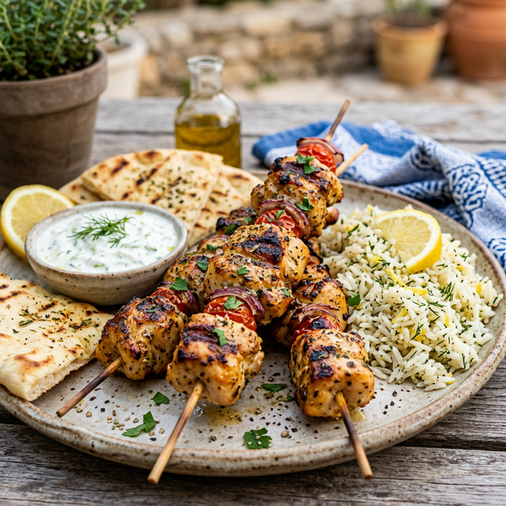

ជាមួយបាយក្រូចឆ្មា

ចុច "ចាប់ផ្តើម" ដើម្បីចាប់ផ្តើម! ↓
ហាន់សាច់មាន់ជាដុំៗឱ្យប៉ុនគ្នា។ ដាក់វាក្នុងចានធំមួយ។
លាយប្រេងអូលីវ ១/៤ ពែង, ទឹកក្រូចឆ្មា ១ ផ្លែ, ខ្ទឹមស ២ កំពឹស និងអូរីហ្គាណូឱ្យច្រើន។
ចាក់ទឹកម៉ារីណាតលើសាច់មាន់។ ទុកវាចោល ៣០ នាទីក្នុងទូទឹកកក។
ដាំបាយជាមួយអំបិលបន្តិច និងច្របាច់ក្រូចឆ្មា រហូតដល់ឆ្អិនងំល្អ។
ដោតសាច់មាន់នឹងឈើ។ អាំងវា ១០ នាទីរហូតដល់ឡើងពណ៌មាស។
រៀបសាច់មាន់លើបាយឱ្យស្អាត ជាមួយនំបុ័ងពីតាក្តៅៗ។ រីករាយនឹងអាហារល្ងាច!